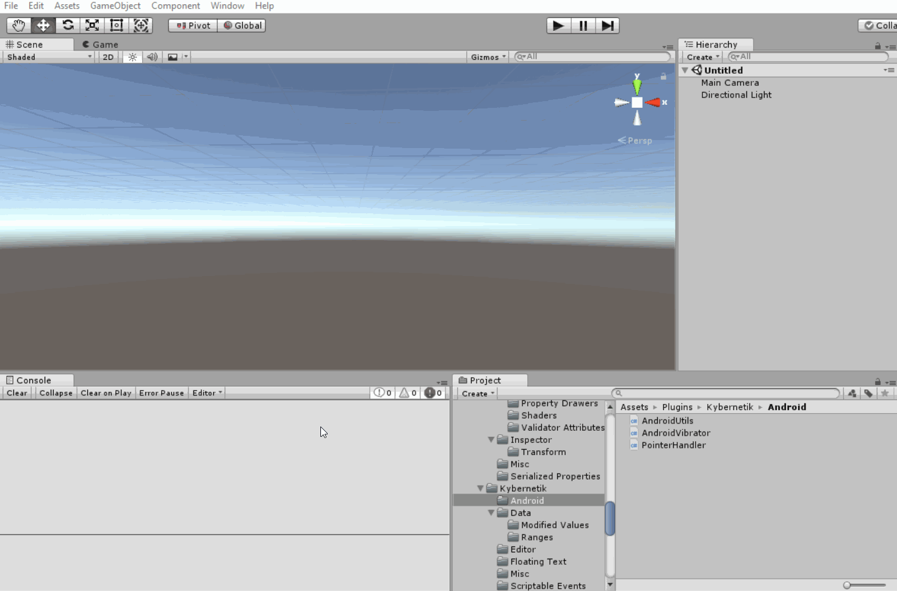

My trusty old Nexus 5 is finally dying because it's USB port has become increasingly unstable. There are two main reasons why it has survived this long: wireless charging and wireless deployment, both of which allow me to minimise the wear and tear on that port. So in this post I will explain the simple script I wrote to allow Unity to deploy builds to my phone (almost) wirelessly.
Initial Setup
- To begin with, you need to have everything set up (Android SDK, USB debugging, etc.) so that when you have your device connected via USB you can use the
File/Build & Runcommand in Unity to build, deploy, and run your application. There are plenty of other tutorials for how to do that, so I won't be covering it here. - Add my AndroidUtils.cs script to your Unity project.
Using The Script
- Connect your device to your computer via USB and to the same WiFi network.
- Run the
File/Connect to Android Devicemenu command added by theAndroidUtilsscript. This will open a few blank Command Prompt windows and lock up Unity for a few seconds while it does its thing. - If it succeeds, the last message it logs will be
connected to 192.168.1.2:5555(depending on the actual IP address of your device). But if it logserror: no devices/emulators foundyou should be able to just run the command again to get it to work. - Now you can use Unity's
File/Build & Runcommand without needing to keep your device connected via USB. - If you turn off your computer or disconnect your device from the WiFi network, you will need to start from step 1 again.
And there you have it, now you only need to connect your USB cable once after turning your computer on, but after that you can deploy your builds wirelessly.
How Does It Work?
The script essentially just finds adb.exe in your Android SDK installation and executes a few commands which you would normally do using Command Prompt:
adb tcpip 5555starts ADB in "tcpip" mode using port 5555.adb shell ip routegets a bunch of info which includes the IP addresses of any connected Android devices.- The script simply grabs the last IP address, so if you have multiple devices you might need to make something slightly more complex. Maybe open an
EditorWindowthat lists all the devices so you can click the one you want. adb connect <address>sets up the connection so that it will stay open over WiFi.